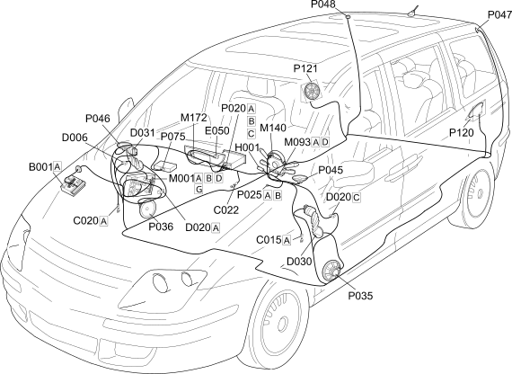

E3510 RADIO - COMPONENT LOCATION
- Path
- Electrical equipment > 1 ELECTRICAL FUNCTIONS > E35 RADIO ACCESSORIES > E3510 RADIO > E3510 RADIO - COMPONENT LOCATION
- Kind
- component location drawing
- Applies to
- engines: 2.0 16V JTD, 2.2 16V JTD; all production periods; only with equipment: MY 2005
- Interactive page
- https://sloeber94.github.io/elrnDB-fUlss/en/#/179011578
Applies to: engines: 2.0 16V JTD, 2.2 16V JTD; all production periods; only with equipment: MY 2005

Component code | Description | Reference to the assembly |
|---|---|---|
ENGINE COMPARTMENT JUNCTION UNIT | ||
DRIVER'S DASHBOARD EARTH | - | |
PASSENGER SIDE DASHBOARD EARTH | - | |
Centre dashboard earth | - | |
FRONT/REAR COUPLING | - | |
DASHBOARD/REAR COUPLING | - | |
DRIVER'S FRONT DOOR COUPLING | - | |
PASSENGER FRONT DOOR COUPLING | - | |
INSTRUMENT PANEL | ||
Ignition switch | ||
BODY COMPUTER | ||
STEERING WHEEL NODE CONTROL UNIT (NVO) | ||
WARNING LIGHTS AND MILOMETER CONTROL UNIT (NSO) | - | |
MULTIFUNCTION SCREEN NODE | - | |
RADIO | - | |
AERIAL FEED/AMPLIFIER | - | |
SPEAKER IN LEFT FRONT DOOR | ||
SPEAKER IN RIGHT FRONT DOOR | ||
LEFT FRONT TWEETER SPEAKER | ||
RIGHT FRONT TWEETER SPEAKER | ||
LEFT REAR TWEETER SPEAKER | ||
RIGHT REAR TWEETER SPEAKER | ||
CD CHANGER MODULE | - | |
LEAF REAR SPEAKER IN SIDE PANEL | - | |
RIGHT REAR SPEAKER IN SIDE PANEL | - |
Topics linked from this page (30)
- 5505A MULTI-FUNCTION COMPONENTS
- 5520A IGNITION SWITCH
- 5550A STALK UNIT
- 5560B ANALOGUE CONTROL PANEL
- 5570T CAR RADIO AND CAR TELEPHONE
- B001 ENGINE COMPARTMENT JUNCTION UNIT
- C015 DRIVER'S DASHBOARD EARTH
- C020 PASSENGER SIDE DASHBOARD EARTH
- C022 Centre dashboard earth
- D006 FRONT/REAR COUPLING
- D020 DASHBOARD/REAR COUPLING
- D030 DRIVER'S FRONT DOOR COUPLING
- D031 PASSENGER FRONT DOOR COUPLING
- E050 INSTRUMENT PANEL
- H001 Ignition switch
- M001 BODY COMPUTER
- M093 STEERING WHEEL NODE CONTROL UNIT (NVO)
- M140 WARNING LIGHTS AND MILOMETER CONTROL UNIT (NSO)
- M172 MULTIFUNCTION SCREEN NODE
- P020 RADIO
- P025 AERIAL FEED/AMPLIFIER
- P035 SPEAKER IN LEFT FRONT DOOR
- P036 SPEAKER IN RIGHT FRONT DOOR
- P045 LEFT FRONT TWEETER SPEAKER
- P046 RIGHT FRONT TWEETER SPEAKER
- P047 LEFT REAR TWEETER SPEAKER
- P048 RIGHT REAR TWEETER SPEAKER
- P075 CD CHANGER MODULE
- P120 LEAF REAR SPEAKER IN SIDE PANEL
- P121 RIGHT REAR SPEAKER IN SIDE PANEL